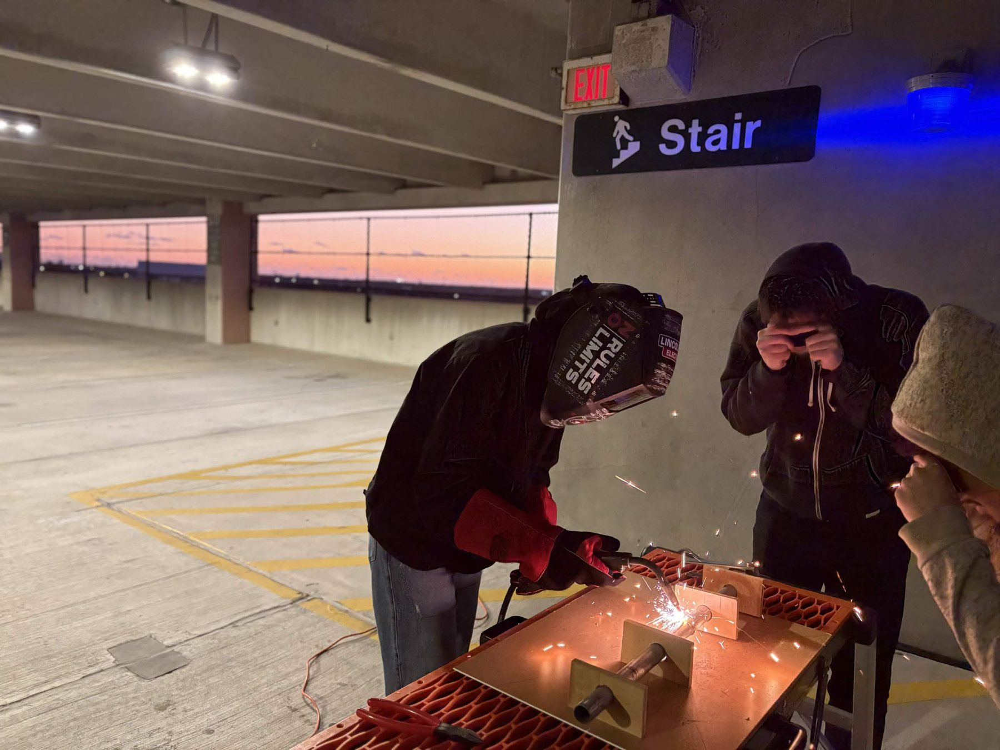
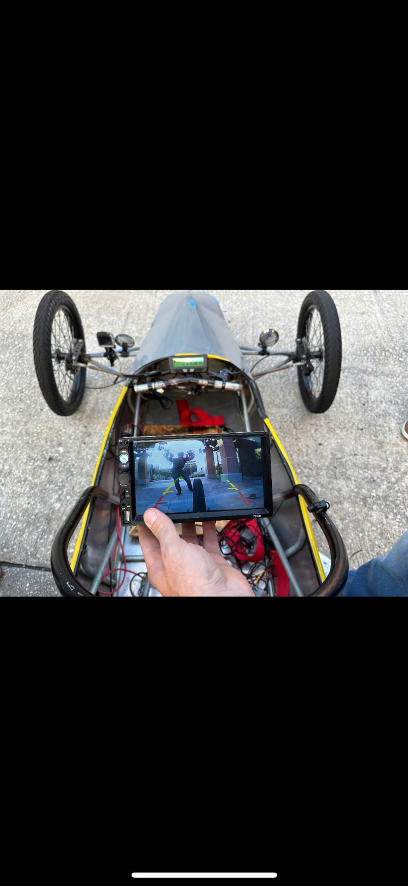
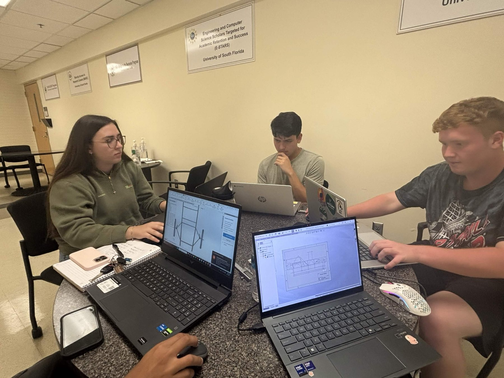
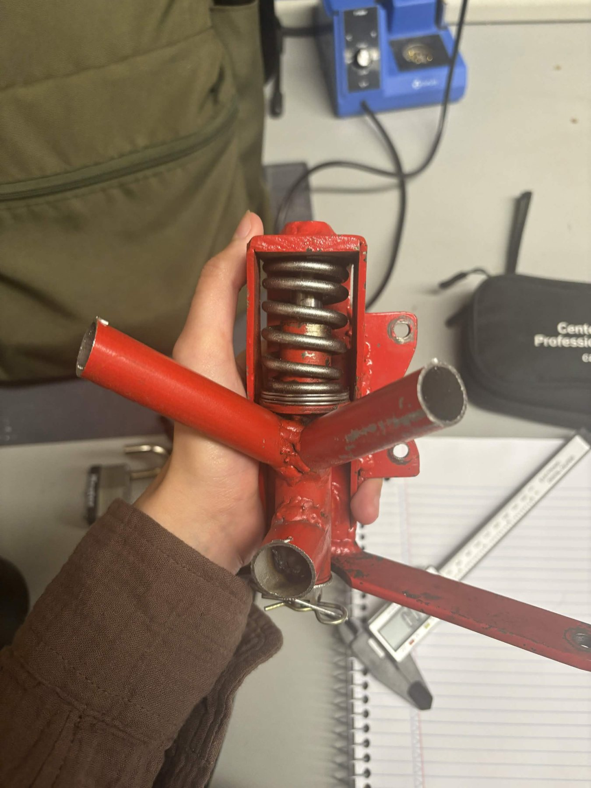
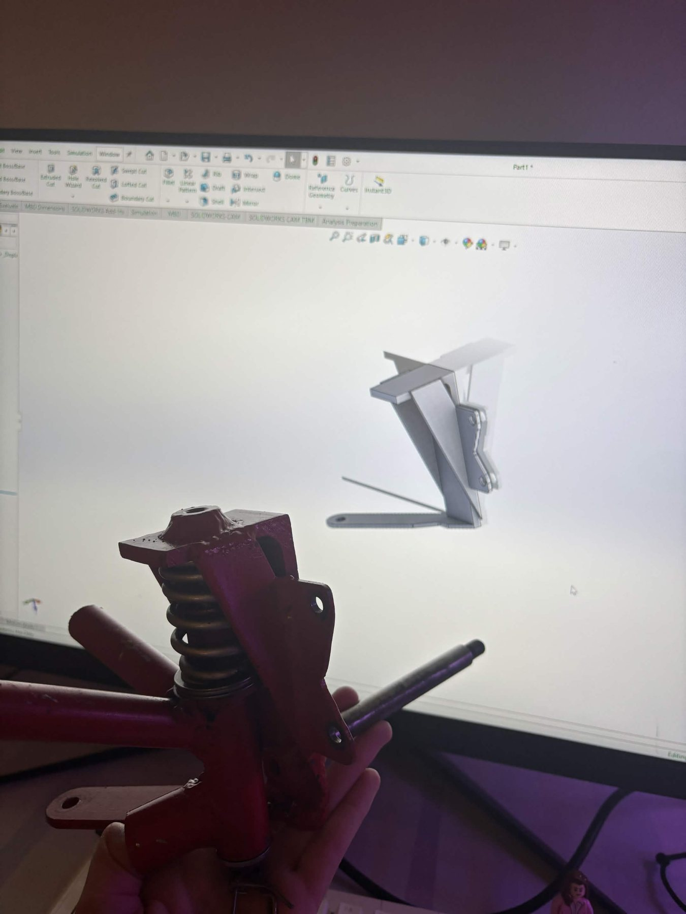
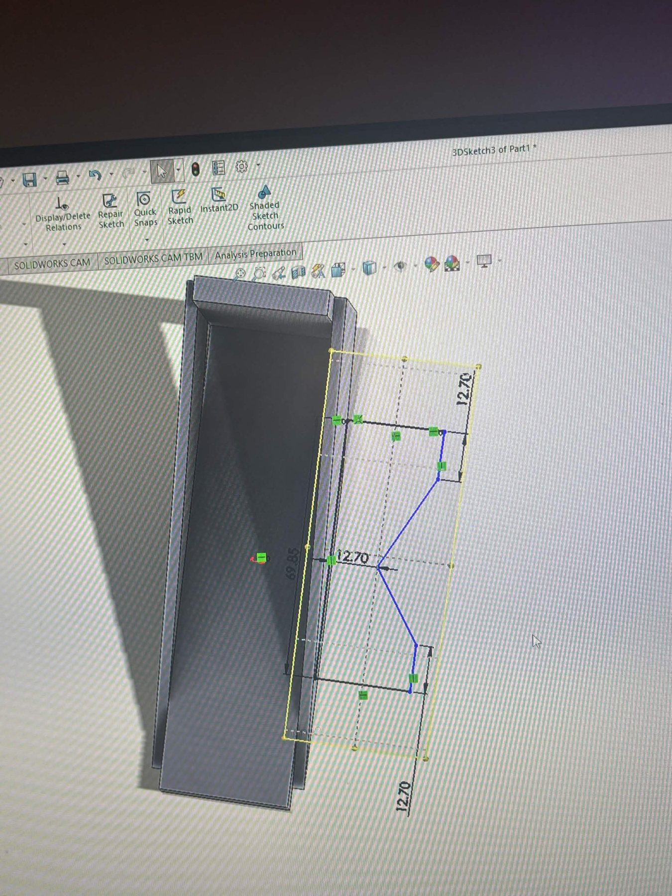
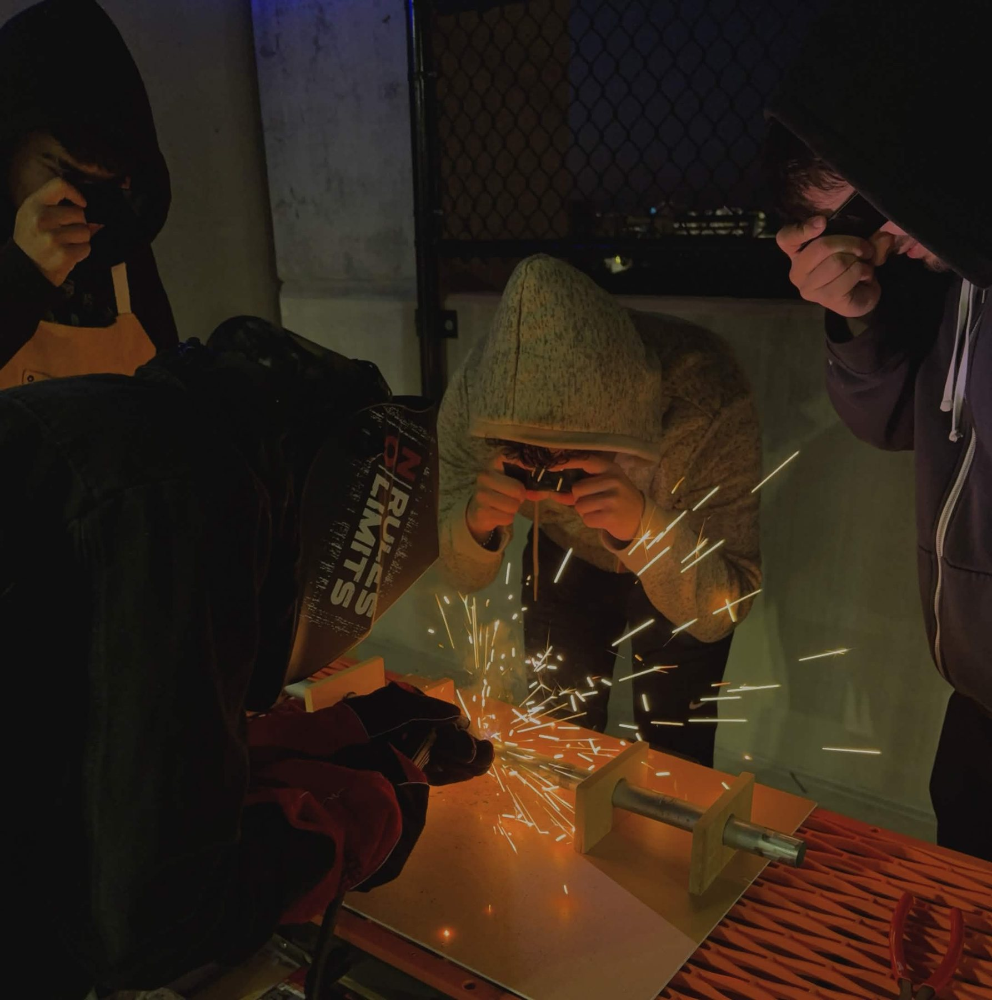

From learning the car to leading mechanical design
I fully joined Electrathon in Summer 2025. At first, I was learning the existing vehicle while most of the IEEE team focused on electronics. Because I was one of the few mechanical engineering members consistently involved during the summer, I moved into a Mechanical Design Lead role in the fall and co-led the mechanical team with another mechanical engineering student.


Chassis packaging and driver fit
One problem with the earlier car was that the chassis had been designed too closely around one driver. When the driver changed, the fit became restrictive. For the new chassis, we used the tallest team member as a packaging envelope so the cockpit would accommodate a wider range of drivers.
The chassis also had to follow Electrathon competition requirements while leaving space for the motor, steering, suspension, wheels, and the rest of the vehicle system.
- Dimension the main frame in SOLIDWORKS.
- Lay out the steering and suspension geometry.
- Select bicycle-style wheels appropriate for the vehicle.
- Determine motor location before building surrounding structure.
- Check symmetry and driver clearance before fabrication.
Studying the existing suspension
We examined the existing car's suspension hardware while developing the new layout. The red spring assembly shown below came from the older vehicle and served as a physical reference during CAD work.



Tube preparation and welding
After the CAD phase, the team moved into fabrication. We measured and marked the tubing, cut pieces to the required lengths, and checked both sides of the chassis for symmetry before welding.
Because several of us were new to welding, we first practiced on scrap tubing while using the required PPE. Once we were comfortable, we moved into welding the chassis components.
